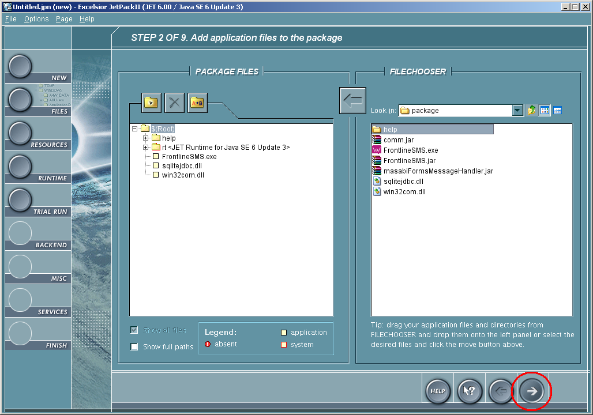
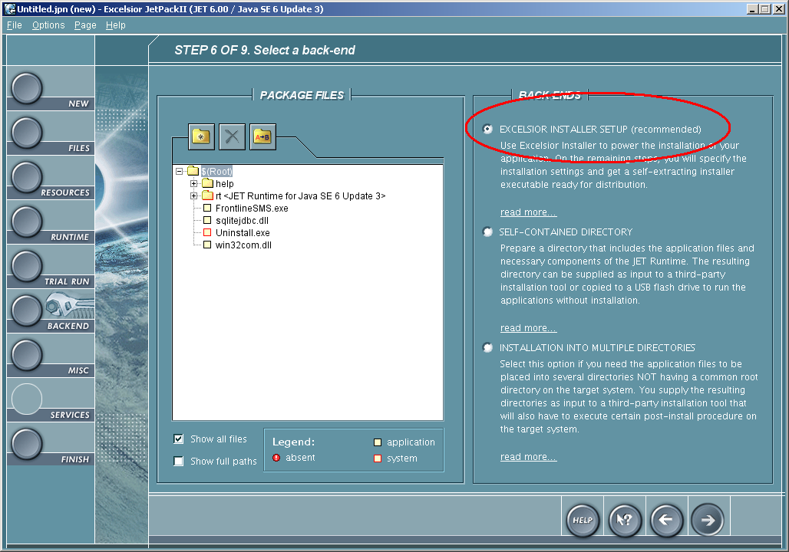
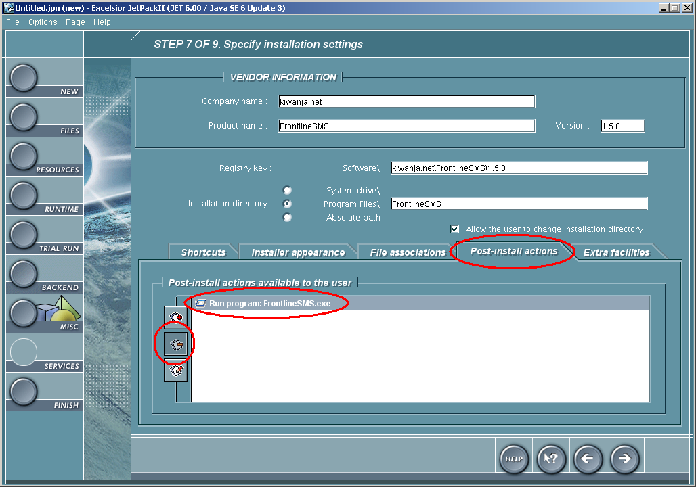

Building an install with Excelsior Jet
This file contains instructions on how to build a distributable install for FrontlineSMS using Excelsior JET.
N.B. this builds an installer for the Windows binary distribution of FrontlineSMS. It should therefore be done on a Windows machine.
Durations shown are rough times taken on Alex's computer - Athlon 64 X2 3800+ 2GHz with 2Gb of RAM. It might take a while on older hardware.
-
Build the project
Run the ANT task
package_windows_jet.BUILD SUCCESSFUL Total time: 21 seconds
-
Build the project again
Run the JET build with the following command:
jc -quiet =p =a ".\FrontlineSMS.prj". This must be done inside the jetPacking directory.XDS Link Version 2.11.12 Copyright (c) Excelsior 1995-2007. No errors, no warnings Link time 0:36.87 Total compilation time 14:14.57
-
Run JetPackII

-
Select New

-
Select Installation

-
Browse to directory %PROJECT_HOME%/jetPacking/package
This directory should contain the FrontlineSMS binary file we have just built, and any other resources we may need to package.

-
Select Files to Package
These are all the files that should be in the final package. Currently the file required here are as follows:
- FrontlineSMS.exe
- help/
- sqlitejdbc.dll
- win32com.dll
-
Go to the next screen
Keep hitting next til you get to the backend setup
 -
Select back-end
Choose the Excelsior Installer backend, and then hit Next
 -
Enter installation details
Enter the following installation details:
label value Company Name kiwanja.net Product Name FrontlineSMS Version e.g. 1.5.8 Registry Key Leave as default Installation Directory Program Files\FrontlineSMS Default Program Folder FrontlineSMS 
-
Edit post-install actions
Remove the post-install action Run program: FrontlineSMS.exe.
The first time FrontlineSMS runs, it generates database and config files. In Windows Vista, the FrontlineSMS installer runs with Administrator priveleges. If FrontlineSMS is launched from the installer, it will also have Administrator priveleges, and so will the generated database and config files. This means that subsequent runs of FrontlineSMS would also require these priveleges in order to modify the config and database files.
 -
Go to the next screen
Hit next to get to the Create installation package screen.
-
Create the package
Manually enter the package name. It should be called InstallFrontlineSMS_%VERSION%.exe. Locate it somewhere obvious; it will not be added to version control.
Once package is named, hit Create.
You will now be asked to save a .jpn file. No use has been found for this yet.

-
Save as updateable
We will require the update file to create update packages from. This should be saved in the jetPacking/ directory with the following name: FrontlineSMS_%VERSION%.jpu. This file will be added to version control.